おうちネットワークの使い方
スマホから家のネットワークにつないで、家のクラウドドライブを使う
手順どおりに進めるだけ。パソコンの知識はいりません
1. はじめに用意するもの
- iPhone（このガイドは iPhone で説明します）
- Apple ID のパスワード（アプリのダウンロードで使うことがあります）
- スマホがインターネットにつながること（Wi-Fi でもモバイル通信でも OK）
- 管理者から届いた「専用アドレス」。こんな形です：
https://………/p/英数字の長い文字列/
2. 方法を選ぶ
家につなぐアプリは 2 種類あります。どちらか一つで OK、両方入れる必要はありません。迷ったら管理者に聞いてください。
3. 「マイページ」を開く
どちらの方法でもこのページを使います。何が使えて、いつまで使えるかがわかり、クラウドドライブもここから使えます。
ホーム画面に追加（次からワンタップで開ける）
- Safari の下中央にある 共有 ボタン（四角に上向き矢印 ⬆︎）を押す
- 下にスクロールして ホーム画面に追加 を押す
- 右上の 追加 を押す
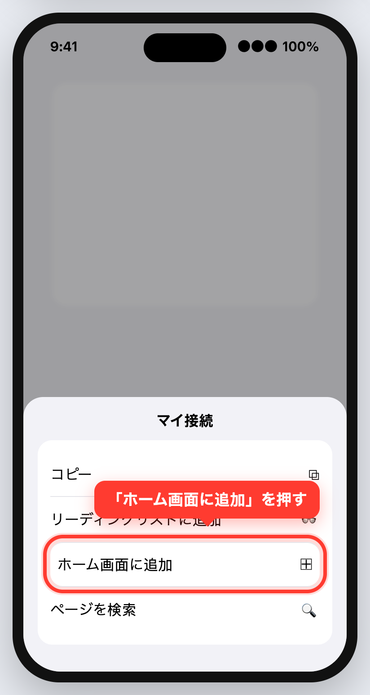
4. 方法 A：Shadowrocket 有料
Shadowrocket をダウンロード
- iPhone の App Store（青い A のアイコン）を開く
- 右下の 検索 を押して Shadowrocket と入力
- 青いロケットのアイコンのアプリを探し、価格のボタンを押して購入
- Face ID か Apple ID のパスワードで支払いを確認
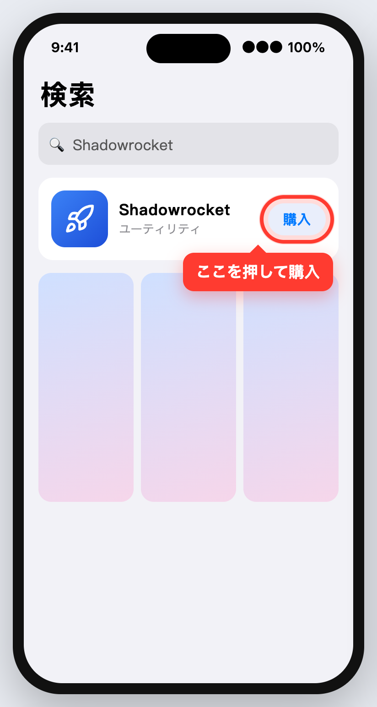
「マイページ」からワンタップで取り込む
- マイページを開き、Shadowrocket の欄までスクロール
- 青い Shadowrocket で開く を押す
- 「Shadowrocket で開きますか？」と出たら 開く を押す
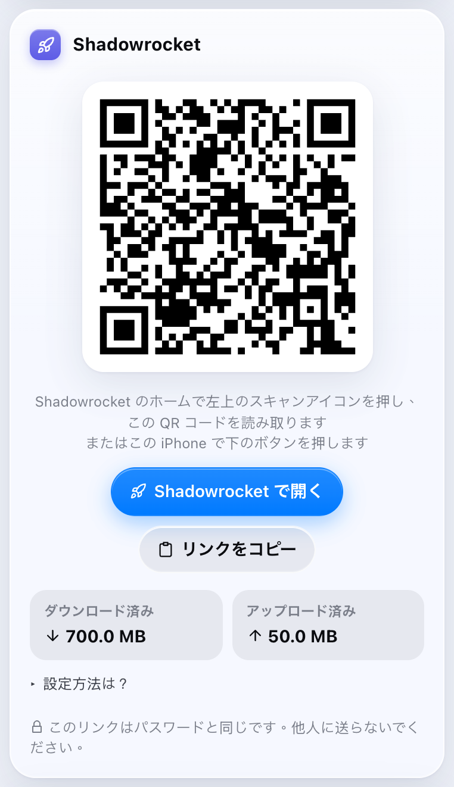
見本・読取不可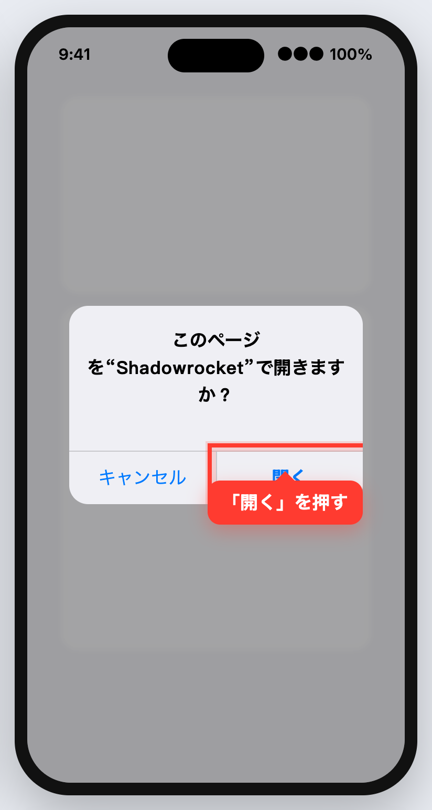
初回：VPN を許可
初めてスイッチを入れると、VPN 構成を追加するか聞かれます。許可 を押し、iPhone のパスコードを入力するか Face ID を使います。
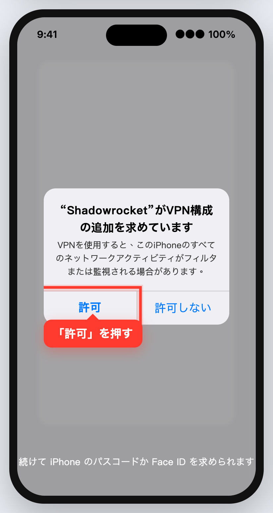
スイッチを入れる
- 下の一覧で「家の Mac」にチェック ✓ が付いているか確認
- 「グローバルルーティング」は プロキシ を選ぶ
- いちばん上のスイッチを入れる（緑になる）
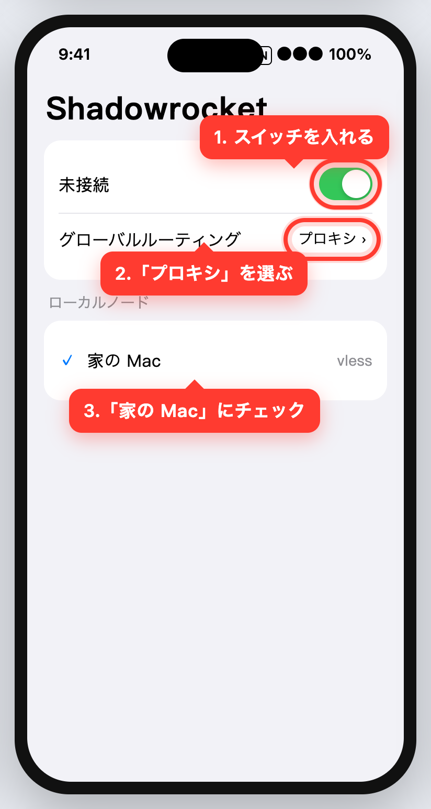
ふだんの使い方
- 使うとき：Shadowrocket を開いてスイッチを入れる
- 使わないとき：スイッチを切るだけ（電池の節約に）
- iPhone の 設定 → VPN でも切り替えられます
5. 方法 B：Tailscale 無料
Tailscale をダウンロード
- App Store を開いて Tailscale を検索
- 入手（無料）を押し、Face ID かパスワードで確認
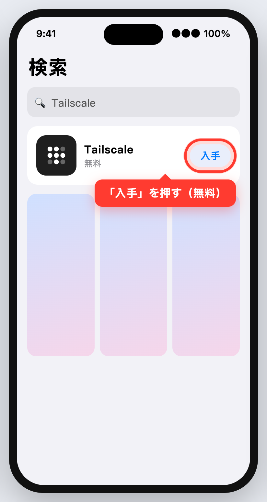
招待を受けてログイン
- 管理者からの招待リンクを開き、「Accept」を押す
- Tailscale アプリを開いて ログイン を押す
- ふだん使っているアカウント（Google か Apple）でログイン
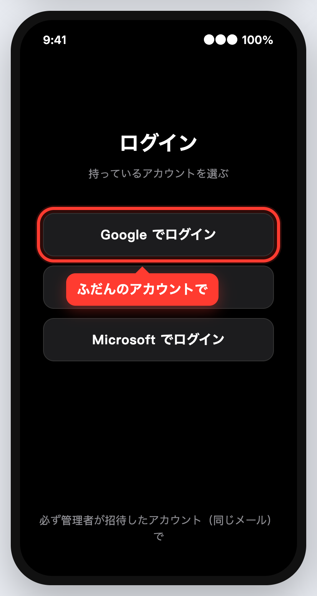
VPN を許可
Shadowrocket と同じく、初回は VPN 構成（名前は Tailscale）を追加するか聞かれます。許可 を押し、iPhone のパスコードか Face ID で確認します。
接続して「家のパソコン」を選ぶ
- いちばん上のスイッチを入れる（緑になる）
- Exit Node を押す
- 家のパソコンを選ぶ（実際の名前は管理者に聞いてください）
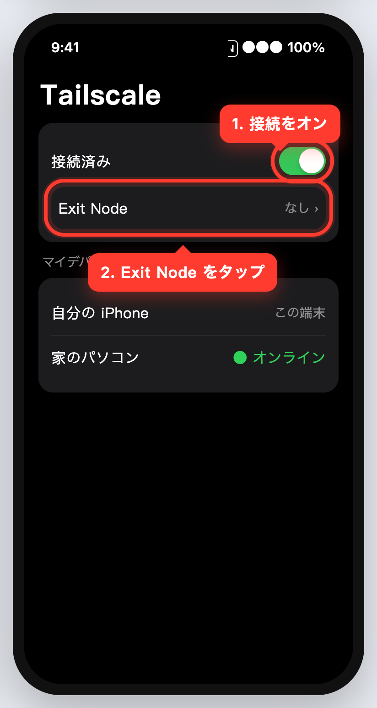
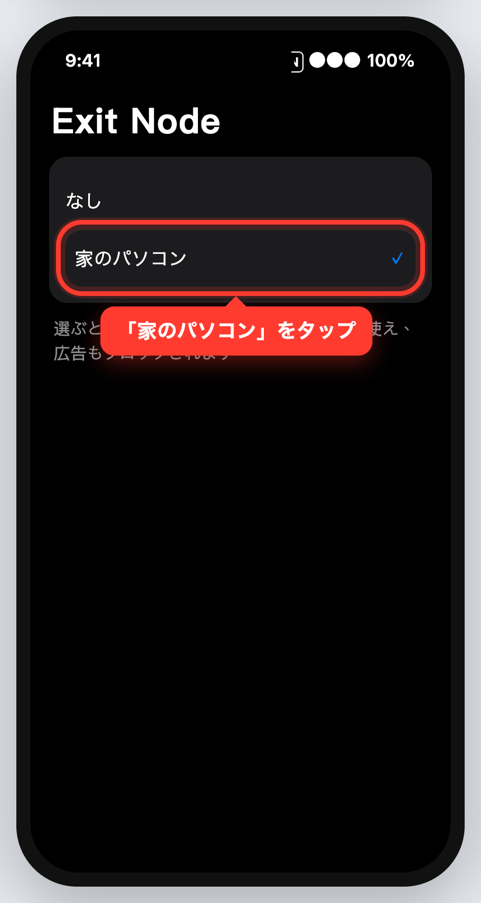
うまくいったか確認
方法 A と同じく、Safari で api.ipify.org を開き、管理者の言った数字と同じなら成功です。
6. 「マイクラウド」に写真やファイルを保存
管理者がクラウドドライブを用意してくれていれば、マイページに「マイクラウド」があります。写真・動画・書類を家のディスクに保存でき、スマホを替えても安心です。
2 つのフォルダ
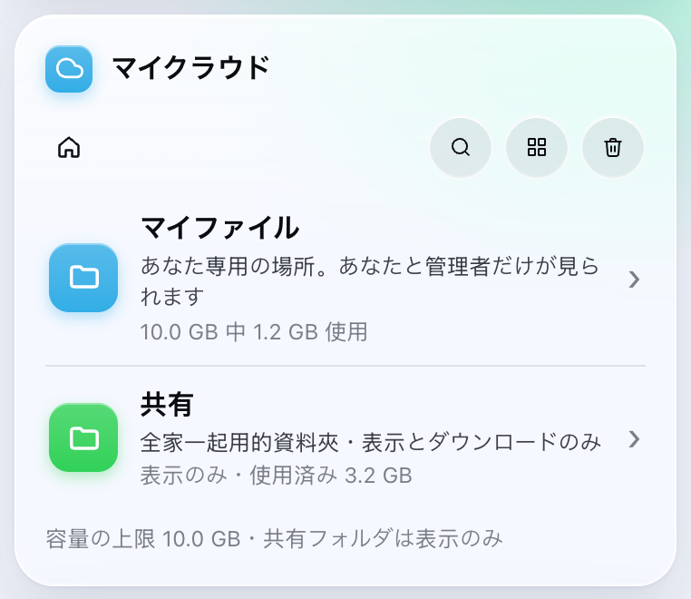
- マイファイル：あなた専用の場所で、あなたと管理者だけが見られます。使用量と上限が表示されます。
- 共有：家族みんなのフォルダ。ここに保存できるかは管理者が決めます。
写真や動画をアップロード
- マイファイル を開く
- 青い アップロード を押す
- フォトライブラリ を選び、アップロードする写真や動画にチェックして 追加 を押す
- 進行状況バーが終わると「アップロード済み」と表示されます。バーの下に速度と残り時間が出ます
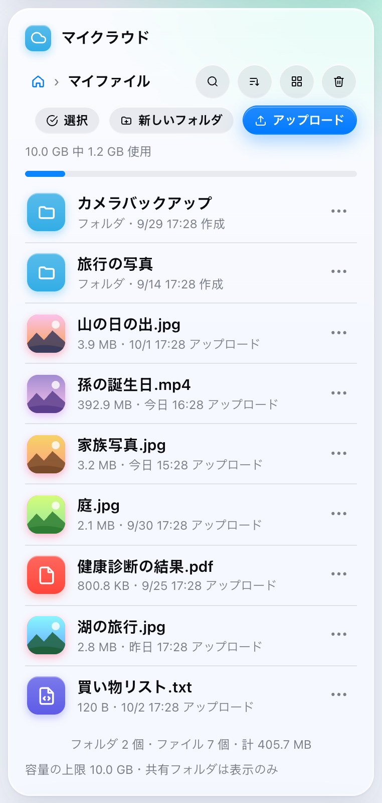
上の小さなボタンの役割
- 🔍 検索：ファイル名の一部（例：「誕生日」）を入れると、すべてのフォルダから見つけます
- ↕️ 並べ替え：名前・アップロード日時・更新日時・サイズ・種類で並べられます。最新のアップロードを見るなら「アップロード日時」
- ▦ 表示方法を切り替え：「リスト」と「アルバム」を切り替えます。アルバムは写真アプリのように格子状に並びます
- 🗑 ゴミ箱：削除したものはまずここに入ります（手順 6 参照）
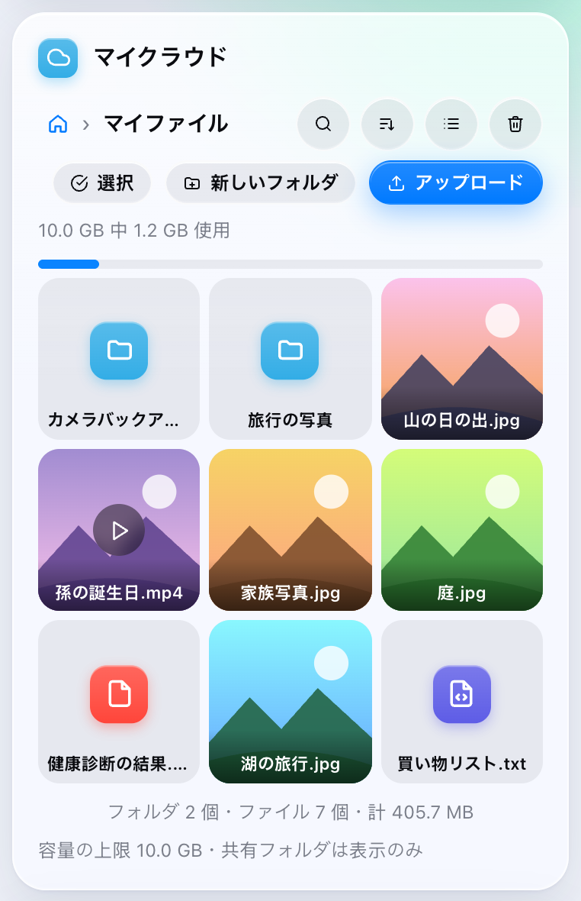
タップしてすぐ見る
ダウンロード不要、タップするとスマホで開けます：
- 写真・動画・音楽：そのまま表示・再生。左右にスワイプすると前後のファイルへ
- PDF・Word・Excel・PowerPoint・Pages・Keynote：1 ページ目を表示します。PDF は PDF を開く で全体を、Word は テキストを見る で全文を見られます
- テキスト（.txt）・表（.csv）：内容をそのまま表示し、CSV は表になります

⋯ でもっといろいろ
各ファイルの右に ⋯ があり、押すと次の項目が出ます：
- ダウンロード：スマホに保存。フォルダなら ZIP でダウンロード になり、フォルダごとダウンロード
- 詳細：サイズ、アップロード日時、写真の画素数、動画の長さを確認
- 共有：友だちに送るリンクを作成（下の「他の人と共有」参照）
- 名前を変更、移動（別のフォルダへ）、削除

まとめて整理する
- 選択 を押す
- 整理したいファイルをタップすると青いチェック ✓ が付きます（すべて選択 で全部に付けられます）
- 移動 で別のフォルダへ、または 削除
- 終わったら 完了
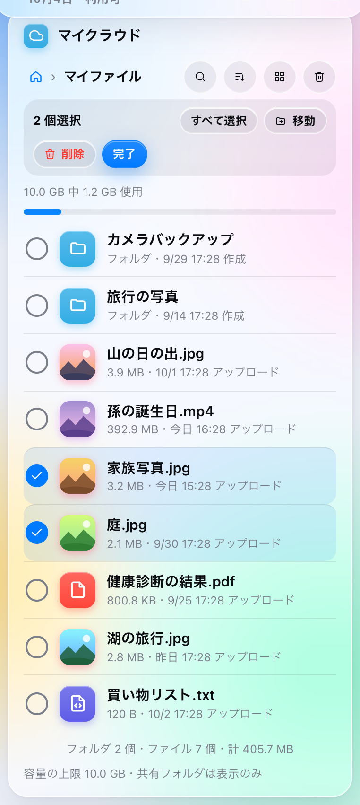
移動ではフォルダの一覧が出ます。フォルダをタップして進み、置きたい場所で ここに移動 を押します。
うっかり削除した？ゴミ箱から戻せます
削除したファイルはすぐには消えません。ゴミ箱に 30 日間残ってから自動で消えます。
- 上の列の 🗑 ゴミ箱 を押す
- 戻したいファイルで 復元 を押すと、元のフォルダに戻ります
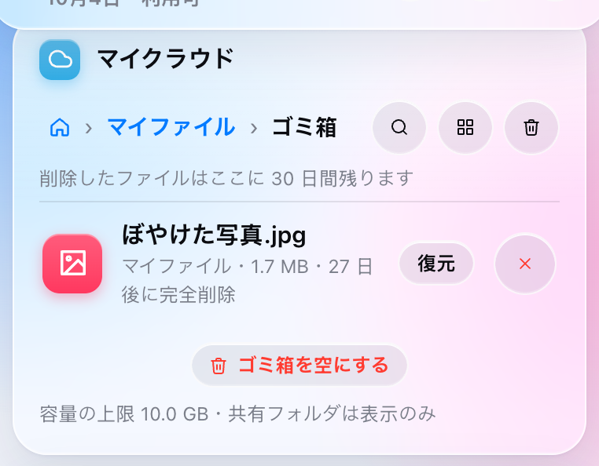
他の人と共有（相手はアプリ不要）
- ファイルかフォルダで ⋯ → 共有
- 有効期限を選ぶ（1 日・7 日・30 日・無期限）
- ダウンロード回数の上限やパスワードも設定できます
- リンクを作成 を押すと自動でコピーされるので、LINE に貼り付けて送るだけ
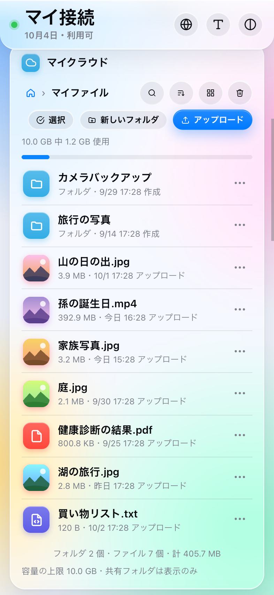
7. iPhone の写真を毎日自動バックアップ
iPhone 標準の「ショートカット」アプリで、毎晩その日の写真をクラウドの「カメラバックアップ」フォルダに自動保存します。アプリの追加も VPN も不要、ネットにつながっていればバックアップされます。
「ショートカット」アプリでオートメーションを追加
- ショートカット アプリを開く（見つからなければホーム画面を下にスワイプして「ショートカット」を検索）
- 下の オートメーション を押し、右上の ＋ を押す
- 時刻 を選び、毎日 23:00 に設定、すぐに実行 を選んで 次へ
3 つのアクションを追加
- アクションを追加 を押し、写真を検索 を探して追加。「フィルタを追加」で 追加日・今日 に設定
- 続けて 各項目を繰り返す を検索して追加
- 「繰り返す」の中に URL の内容を取得 を追加：
- URL：さっきコピーしたアドレスを貼り付け
- 「詳細を表示」を押し、方法 を POST に
- 本文を要求 は ファイル、ファイルは 繰り返し項目
- ヘッダ で「新規ヘッダを追加」を 2 回：
1 つ目：名前X-Requested-With、値portal
2 つ目：名前X-Filename、値は 繰り返し項目 の 名前、続けて.heicと入力
（「設定 → カメラ → フォーマット」が「互換性優先」なら.jpgと入力）
試しに実行
右下の ▶︎ で試しに実行。初回は写真へのアクセスを聞かれるので 許可 を押します。終わったら「マイクラウド → マイファイル → カメラバックアップ」を見ると、今日の写真が入っているはずです。
8. そのほかの便利な機能
大きな文字（年配の家族向け）
マイページ右上の T を押すと、文字もボタンも大きくなります。このスマホが覚えているので次回も大きいまま。もう一度 T を押すと元のサイズに戻ります。
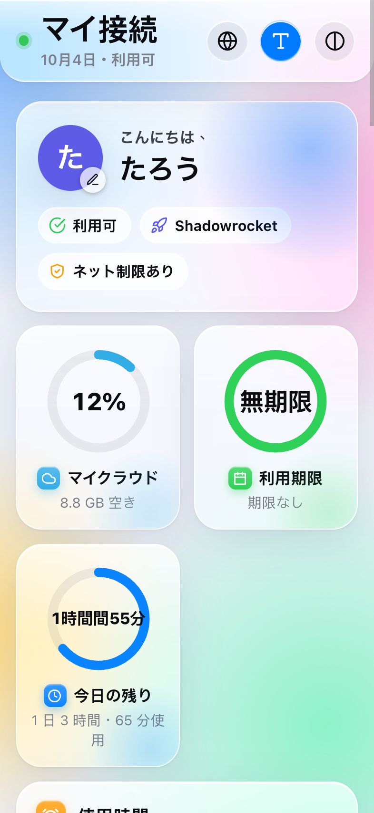
今日の残り時間
管理者が1 日の利用時間を設定していると、ページに青い丸「今日の残り」が出て、残り時間がわかります。
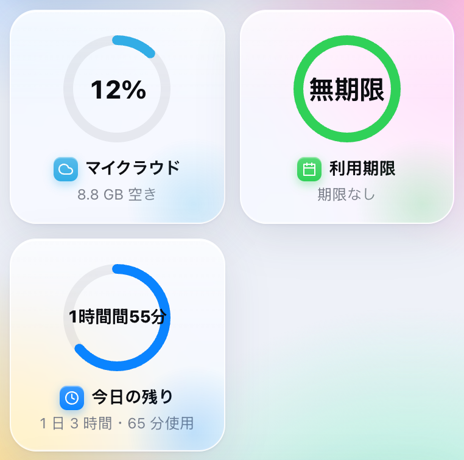
- 実際にネットを使っている間だけ数えます。つないだまま使っていなければ減りません
- 時間を使い切るとその日はつながらず、深夜 0 時に自動で戻ります
- 足りなければメッセージで管理者に頼めます
管理者にメッセージ
利用期限の延長、クラウド容量の追加、1 日の時間の追加、困ったことがあるときは、ページから直接メッセージを送れます：
- 「管理者にメッセージ」で項目を選ぶ（例：クラウド容量を増やす）
- 補足があれば下の欄に書く（任意）
- 送信 を押す
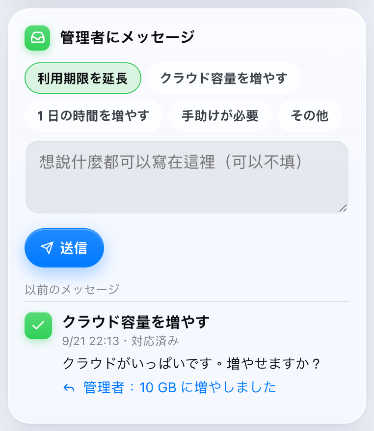
管理者のスマホにすぐ通知が届きます。返信は「以前のメッセージ」の下に表示され、緑のチェックは対応済みの印です。
速度テスト
遅いと感じたら、ページいちばん下の「接続チェック」で 速度テスト の横の 開始 を押すと、約 10 秒でダウンロードとアップロードの速度が出ます。
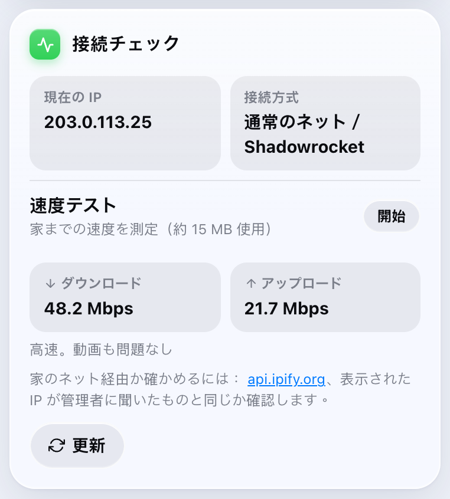
- 20 Mbps 以上：高速、動画も問題なし
- 5〜20 Mbps：ふだん使いには問題なし
- 5 Mbps 未満：遅め。場所や Wi-Fi を変えてみてください
9. 家の Mac の様子を見る パネル権限がある人
家のネットワークとクラウドは 1 台の Mac で動いています。管理者が「コントロールパネル」を許可していれば、この Mac がどれくらい忙しいか、熱くないか、バッテリーの具合はどうかを見られます。このページは見るだけで、設定は何も変わりません。安心してください。
「Mac」ページを開く
- コントロールパネルを開く（先に Tailscale をオン）
- 下の 設定 を押し、上の Mac を押す
またはパネルのホームで CPU か メモリ の丸をタップしても、このページに移動します。
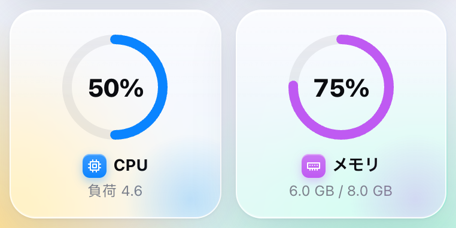
いちばん上：今の状態がひと目でわかる
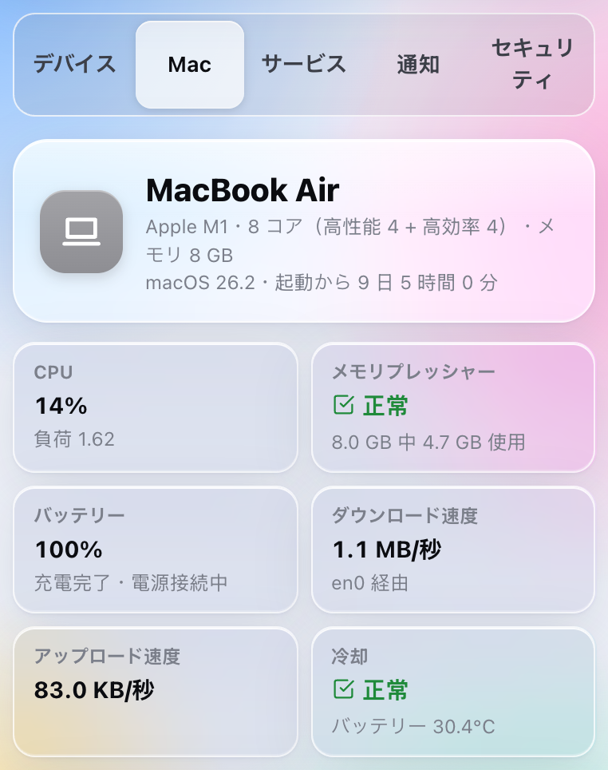
- CPU：今どれくらい忙しいか。ふだんは 20% 以下、たまに上がっても大丈夫
- メモリプレッシャー：緑の「正常」なら OK。オレンジの「高め」はアプリの開きすぎで遅くなります
- ダウンロード／アップロード速度：家の Mac が今どれだけデータを送受信しているか
- 冷却：緑の「正常」。赤の「高温で速度低下」は熱すぎて自動で遅くなっている状態です
推移グラフ：直近 24 時間
直近 1 時間・6 時間・24 時間 から選べます。グラフを指でタップするとその時刻の数値が出て、グラフの外をタップすると消えます。
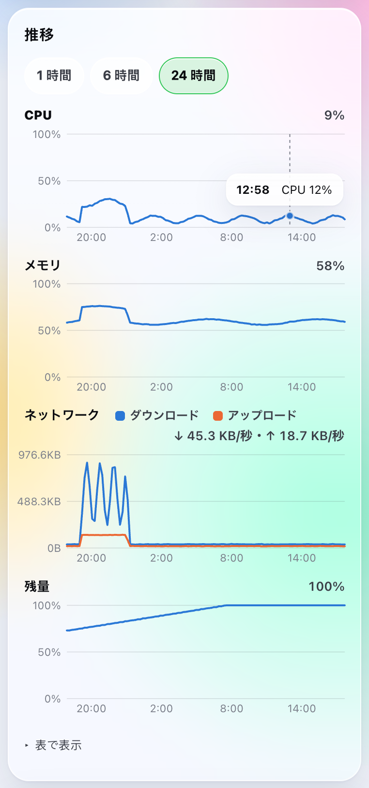
グラフが苦手なら、いちばん下の 表で表示 で時刻ごとの数値を表にできます。
バッテリー
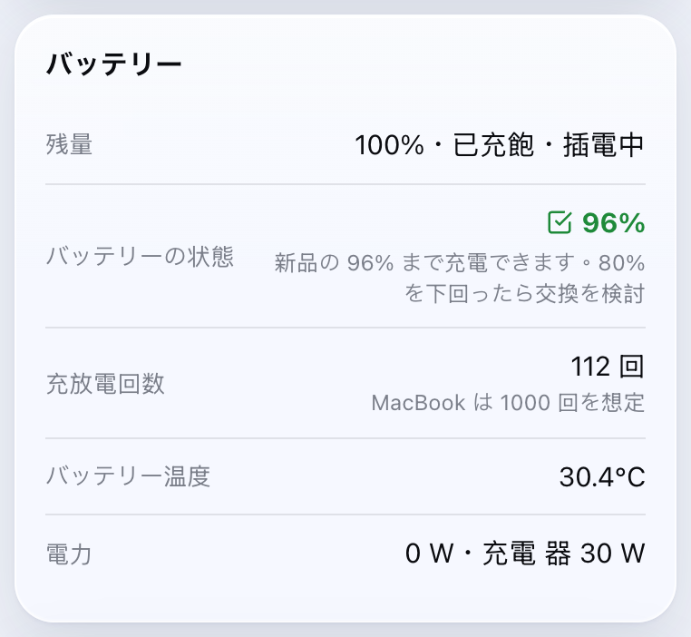
- バッテリーの状態：新品と比べて何 % まで充電できるか。80% 以上なら正常、80% を下回ったら交換を検討
- 充放電回数：バッテリーを何回分使ったか。MacBook は 1000 回を想定
- バッテリー温度：30 度台は正常。40 度を超えるとオレンジで注意
メモリ：パソコンが遅くなる理由
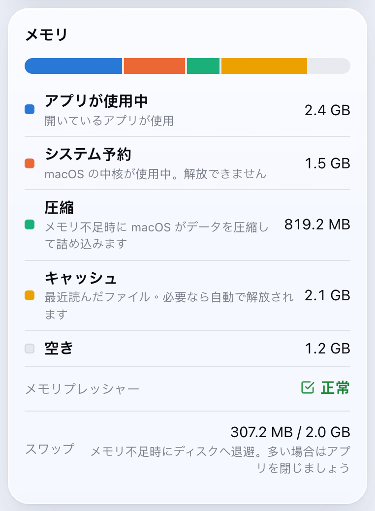
- バーは色分けされ、それぞれの横に説明と使用量があります
- キャッシュは心配いりません。必要なら自動で空きます
- 圧縮やスワップが多いとメモリ不足で、遅く熱くなります
リソースを多く使うアプリ
CPU 順 と メモリ順 を切り替えられます。同じアプリが複数（ブラウザのタブなど）あると 1 行にまとめ、×数 を表示します。
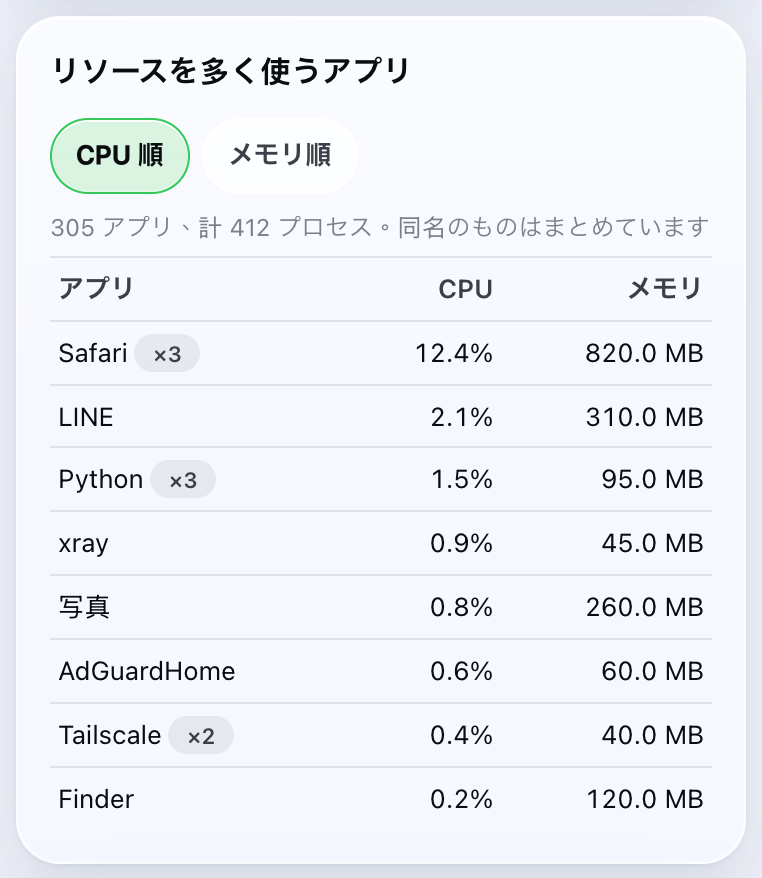
10. スマホで Windows PC を操作 管理者
家に Windows PC があれば、Mac と同じようにスマホから操作できます：使用中か確認、曲送り、音量調整、使っている人への通知、ロック、シャットダウン。この機能は管理者（パネルの所有者）だけが使えます。
まず Windows に Tailscale を入れる
- Windows で tailscale.com/download からダウンロードしてインストール
- スマホと同じアカウントでログイン（重要：違うアカウントだとつながりません）
- 右下の Tailscale アイコンが接続済みになっていること
スマホでインストールコマンドを作る
- コントロールパネルを開き、下の リモート を押す
- 上の ＋ Windows を押し、インストールコマンドを作成 を押す
- コマンドをコピー を押し、LINE やメールで Windows PC に送る
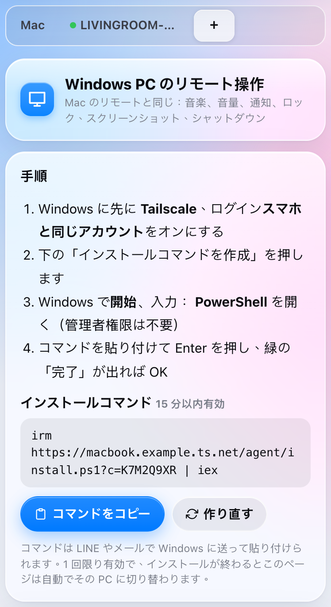
Windows でコマンドを貼り付け
- キーボードの ⊞ Windows キー（または左下のスタート）を押し、PowerShell と入力して Enter で開く
- 青か黒のウィンドウで右クリック（または Ctrl+V）して貼り付け、Enter
- 緑の 「完了！」 が出たら終わり。ウィンドウを閉じて OK
状態を見て音楽を操作
上のボタンで Mac と各 Windows PC を切り替えます。名前の横の緑の点は電源が入っていてつながる状態です。
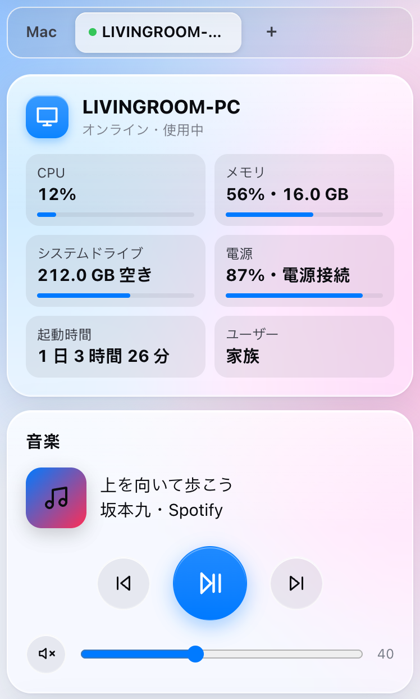
- オンライン・使用中／操作なし／ロック中：今だれかが使っているかわかります
- 音楽：Spotify やブラウザの YouTube などで再生中の曲がわかり、一時停止・曲送り・音量調整ができます
画面と電源
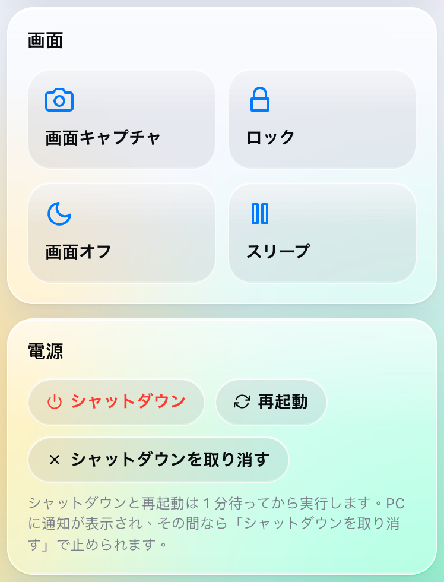
- 画面キャプチャ：PC の今の画面を見る（ロック中は見られません）
- スリープ・シャットダウン・再起動は2 回押すと実行されます（誤操作防止）
- シャットダウンと再起動は1 分待ってから実行し、PC に通知が出ます。やめたいときは シャットダウンを取り消す
さらに下には：通知を表示と読み上げ（例：「ごはんだよ！」）、クリップボード同期（スマホと PC で文字をやり取り）、PC でアドレスを開くがあります。
使わなくなったら：削除
その PC のページのいちばん下で この PC を削除（2 回押す）。PC の電源が入っていれば、アプリが自分で削除されます。切れていれば次に起動して接続したときに削除されます。
11. 管理者に問題を報告
ページが開かない、クラウドへのアップロードに失敗、ネットにつながらない…おかしいと思ったら、マイページから管理者に伝えましょう。長い説明は不要、選んでスクリーンショットを付けるだけです。
「問題を報告」を探す
マイページを開いて下にスクロールし、オレンジの 「問題を報告」 で 問題を報告する を押します。
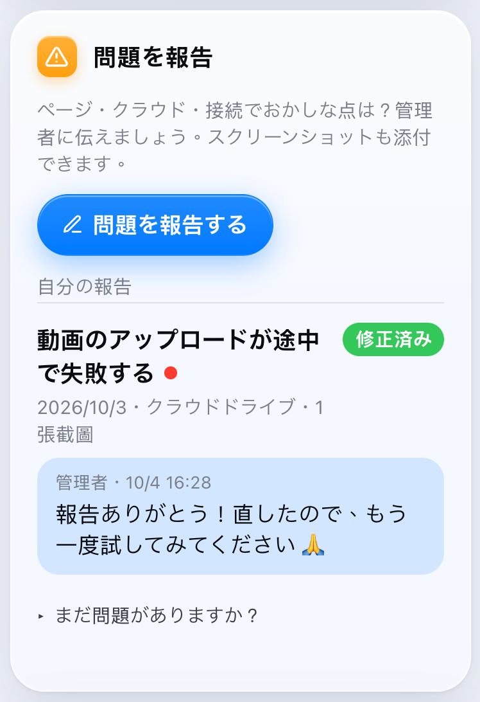
入力するだけ
- どこに問題がありますか？：クラウドドライブ、ネット／接続、マイページ…から選ぶ
- どのくらい深刻？：軽微・少し影響あり・まったく使えない
- 何が起きたか一言で：例「動画のアップロードが途中で失敗する」
- 詳細：任意。書くと原因が早く見つかります
- スクリーンショット：スクリーンショットを選ぶ で写真から最大 3 枚
- 報告を送信 を押すと、管理者のスマホにすぐ通知が届きます
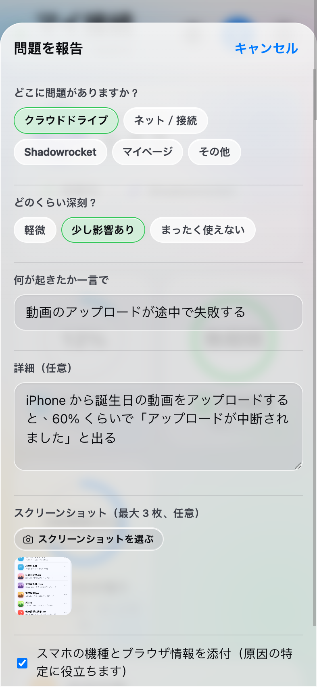
管理者の返信を見る
- 管理者が返信すると、タイトルの横に赤い点 🔴 が付きます
- 右のラベルで状況がわかります：新規 → 対応中 → 修正済み
- 補足したいときは下の欄に書いて 送信
- 「修正済み」なのにまだおかしい？「まだ問題がありますか？」で管理者に伝えると、報告が未対応リストに戻ります
12. 困ったときは
Windows リモート：貼り付け後に赤字で「インストールに失敗」
- Windows 右下の Tailscale が接続済みで、スマホと同じアカウントでログインしているか確認。
- コマンドは 1 回限り・15 分間有効：スマホで 作り直す を押し、新しいコマンドを貼り付け直します。
- PowerShell に貼り付けてください。「コマンドプロンプト（cmd）」ではありません。
Windows リモート：PC がずっと「オフライン」でボタンがグレー
オンにしたらネットにつながらない
- まず Shadowrocket（または Tailscale）のスイッチを一度切ってから入れ直す。
- それでもだめなら、いったんスイッチを切ればスマホは通常のネットに戻ります。
- 問題を報告で管理者に伝えましょう（「まったく使えない」を選ぶ）：家のパソコンの電源が切れたか、ネットが止まっているかもしれません。
マイページに「権限は無効」や赤い文字が出る
- 利用時間外：管理者が使える時間を決めています。その時間になれば使えます。
- 期限切れ：利用期限が終わりました。延長するか管理者に聞いてください。
- 無効：管理者が一時的にオフにしています。管理者に聞いてください。
「今日の時間を使い切りました」と出る
マイページに「ページが見つかりません」や「アドレスは無効です」と出る
Shadowrocket で「家の Mac」の横に赤い点
一部のアプリやサイトが開かない
アップロードに失敗し「容量の上限を超えています」と出る
写真の自動バックアップが動かない
- ショートカットに「管理者が写真の自動バックアップを許可していません」と出る：管理者にパネルでオンにしてもらってください。
- 「ショートカット」アプリ →「オートメーション」で、そのオートメーションがオンで「すぐに実行」になっているか確認。
- 手動で ▶︎ を押して試し、エラーメッセージが出ないか確認。
- 「forbidden」と出る：2 つの「ヘッダ」の名前に打ち間違いがないか確認（大文字・小文字も同じに）。
- 「容量の上限を超えています」と出る：クラウドがいっぱいです。古いファイルを消すか、管理者に容量の追加を頼んでください。
友だちが共有リンクを開けない
クラウドの写真がグレーでサムネイルがない
パネルに「Mac」ページが見当たらない
スマホを買い替えたら？
Shadowrocket と Tailscale を同時に使える？
13. 安全のための注意
- 専用アドレスを他人に送ったり、グループに貼ったりしないで
- Shadowrocket の QR コードのスクリーンショットを共有しないで
- うっかり送ってしまったらすぐ管理者に伝えて。新しいものに替えてもらえば、古いものはすぐ無効になります
- 「写真の自動バックアップ」のアップロード用アドレスを他人に渡さないで。手に入れた人はあなたのクラウドにファイルを送れます
- 共有リンクを送ると、持っている人は誰でもダウンロードできます。大事なファイルはパスワードと期限を設定しましょう
- 管理者を名乗る人にパスワードや確認コードを聞かれたら、まず本人に電話して確認